7. luokka – Yläkoulun startti
Uusi vaihe alkaa – ja se on jännittävää! Yläkoulussa kehität opiskelutaitoja, löydät omat vahvuutesi ja alat miettiä tulevaisuuttasi.
Yläkoulussa kehität opiskelutaitoja, löydät omat vahvuutesi ja alat miettiä tulevaisuuttasi.
Kaikki on alussa vähän uutta – ja se kuuluu asiaan.
Et ole tässä yksin – kaikki muut ovat samassa tilanteessa.
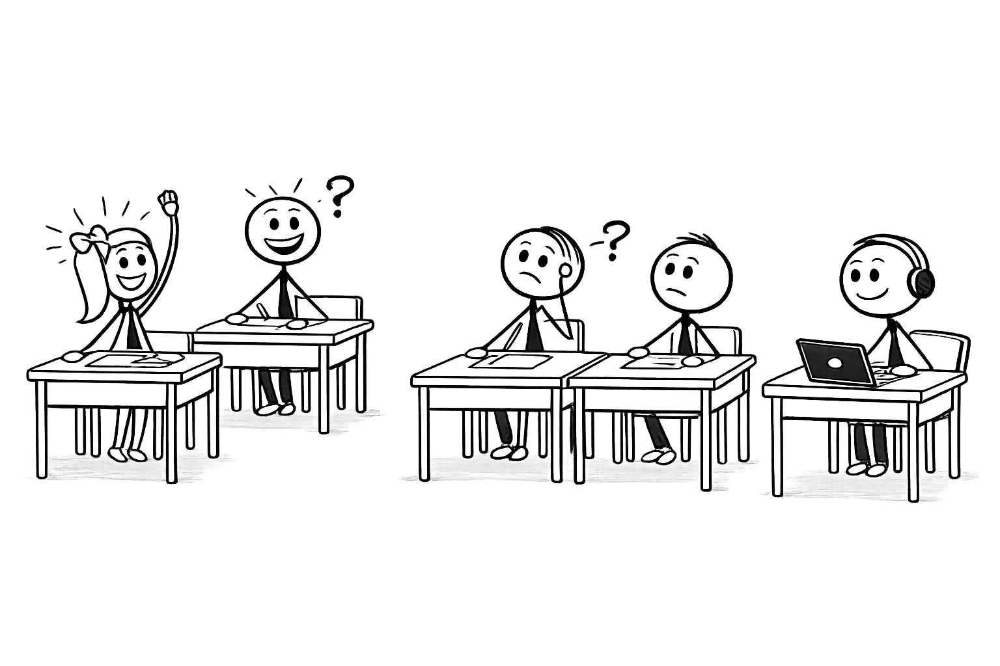
Lukujärjestys muuttuu – uusia aineita tulossa
Yläkouluun siirtyminen tuo lukujärjestykseen uusia oppiaineita. Alakoulun ympäristöoppi jakautuu 7. luokalla viideksi erilliseksi aineeksi: biologiaksi, maantiedoksi, fysiikaksi, kemiaksi ja terveystiedoksi.
Lähteet: ePerusteet – Perusopetuksen OPS 2014
Hei! Olen sinun verkkovalmentajasi. Minäkin aloitin alusta kerran…
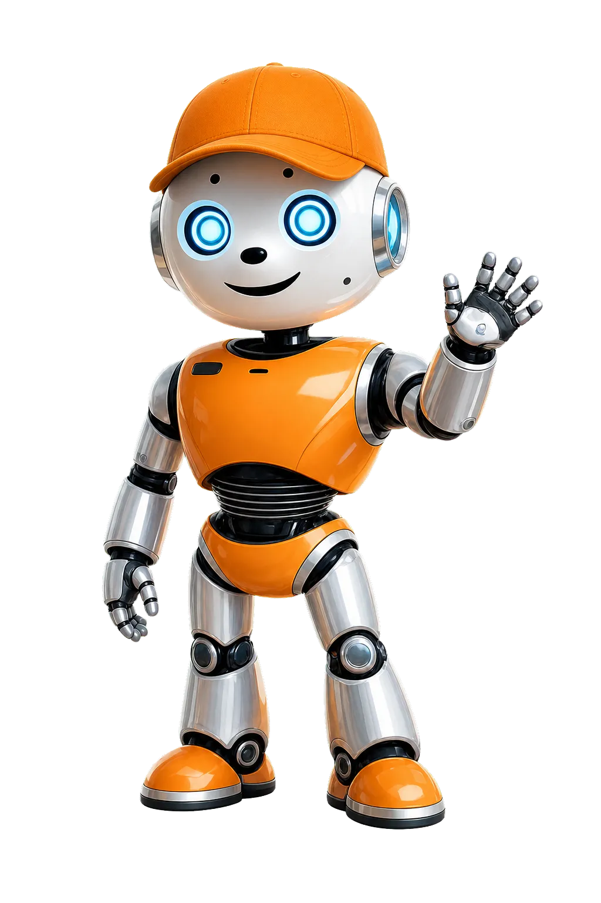
Yläkoulun selviytymisopas
Neljä keinoa selviytyä yläkoulun arjesta
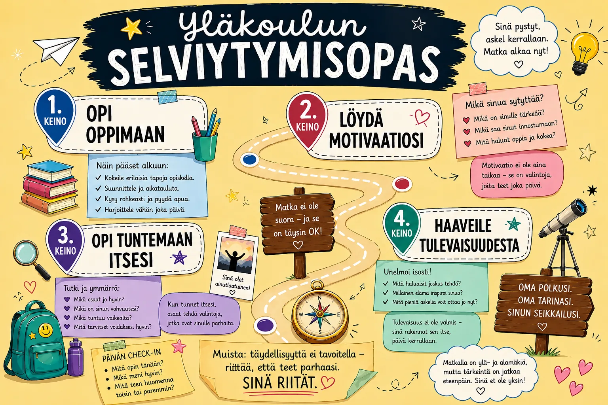
Robo saapuu yläkouluun
Tutustuu Roboon ja tekoälyyn – ja kirjoita kirje itsellesi tulevaisuuteen. Mitä haaveilet? Mitä pelkäät? Mitä haluat muistaa?
Operaatio Yläkoulu
Amazing RaceTeette tämän tehtävän ryhmissä. Opettaja antaa jokaiselle ryhmälle kirjekuoren – sisällä on neljä rastikorttia. Ratkaiskaa rastit järjestyksessä yhdessä liikkuen.
- Avatkaa Rasti 1 ja lukekaa ohjeet ääneen yhdessä
- Ratkaiskaa tehtävä – ryhmä päättää itse milloin on valmis
- Vasta sitten avatkaa seuraava kortti
- Viimeisessä rastissa valmistaudutte esitykseen koko luokalle
⏱ Aika: 20–25 min · Ryhmäkoko: 3–4 oppilasta
Kirjoita kirje itsellesi kolmen vuoden päähän: Mitä toivot olevasi silloin? Mitä pelkäät? Mikä sinussa on nyt sellaista, jota et halua unohtaa? Säilytä kirje ja lue se 9. luokalla.
Kirjoita rehellisesti — kirje on vain sinulle
Rupatteluhetki 💬
Kysymyskortit tutustumiseen ja ryhmäytymiseen – rentoa juttelua yhdessä
Kysymyskortit
Juttele kavereiden kanssa ja tutustukaa rennosti. Nostakaa kysymyskortteja ja vastatkaa vuorotellen – mukana hauskoja, rentoja ja vähän syvempiäkin kysymyksiä.
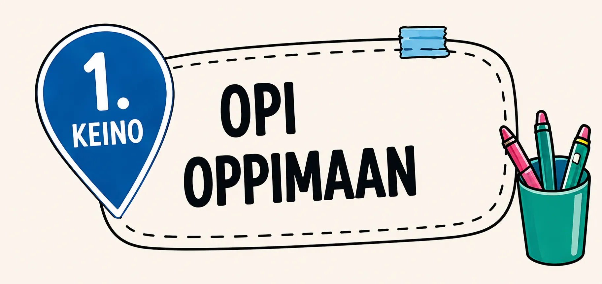
Kaikki oppii eri tavalla. Toinen oppii kuuntelemalla, toinen tekemällä. Hyvä oppija kokeilee eri tapoja, ei luovuta heti ja pyytää apua.
Oppiminen ei ole lahja – se on taito, jota voi ja kannattaakin kehittää!
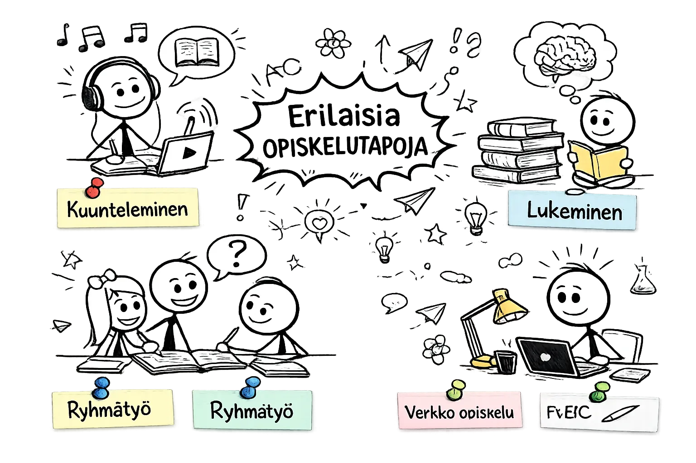
Opi, kasva, loista!
Muisti · Lukeminen · Ajanhallinta · Tekoäly
Neljä tehtävää, joissa harjoittelet oppimisen tärkeimpiä taitoja.
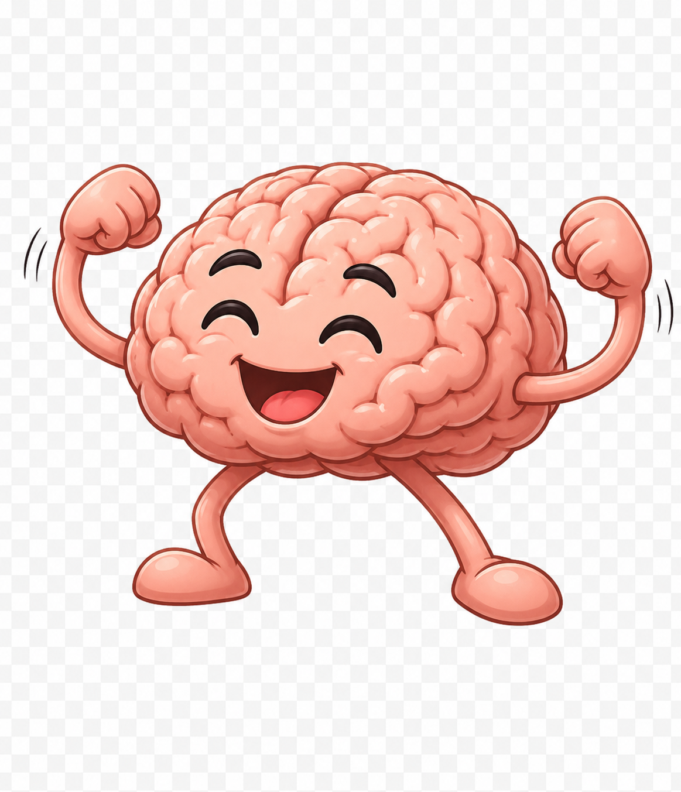
Muisti ja muistaminen
Opi, miten aivosi toimivat!
Avaa tehtävä →Lukeminen
Opi lukemaan älykkäämmin!
Avaa tehtävä →Aikataulut
Ota aika hallintaan!
Avaa tehtävä →Opi tekoälyn kanssa
Kokeile uutta oppimistapaa!
Avaa tehtävä →Tee itsellesi henkilökohtainen opiskelusuunnitelma: valitse yksi oppiaine, johon haluat panostaa tällä viikolla. Kirjaa, milloin opiskelet, miten ja miten arvioit onnistumistasi viikon lopussa.
Pienet, konkreettiset tavoitteet toimivat paremmin kuin isot haaveet
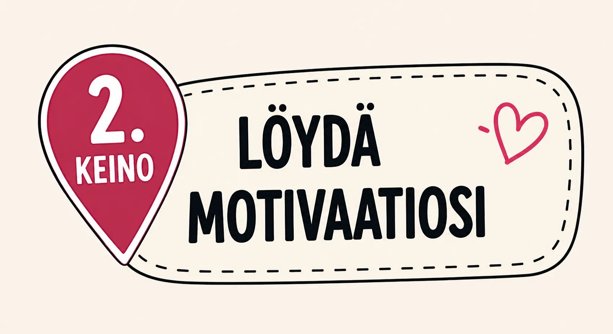
Mikä saa sinut liikkeelle?
Motivaatio voi tulla kahdesta suunnasta – ja molemmat toimivat.
Teen, koska haluan
Saat energiaa itse tekemisestä tai oppimisesta.
Esimerkkejä
— Aihe kiinnostaa oikeasti
— Haluaa osata paremmin
— Tekeminen tuntuu hyvältä
Milloin viimeksi aika lensi koulussa?
Teen, koska täytyy tai saa palkkion
Energia tulee ulkopuolelta: arvosana, kehu tai seuraukset.
Esimerkkejä
— Hyvä arvosana
— Vanhemmat odottavat
— Ei halua epäonnistua
Mitä tapahtuu, jos palkinto katoaa?
Molempia tarvitaan — omat keinot selviävät kokeilemalla.
🤔 Mieti ennen peliä
Motivaatiotori
Liikkuva tehtäväJokaiselle ryhmälle annetaan yksi motivaatio-ongelmakortti. Ensin ryhmä keksii omat ratkaisut, sitten kierretään parantamassa toistensa ideoita.
- Lue korttisi ongelma ääneen ryhmälle
- Kirjaa kaikki ratkaisuideat kortille (3 min)
- Siirry seuraavalle kortille — lisää tai paranna ideoita (3 min/kierros)
- Palaa omalle kortille ja valitse paras idea
- Esittele ongelma ja voittajaidea luokalle (30 sek)
⏱ Aika: 20–25 min · Ryhmäkoko: 3–4 oppilasta · Liikkuva
Pidä motivaatiopäiväkirjaa viikon ajan: kirjaa joka päivä yksi asia, joka innosti sinua oppimaan — ja merkitse, oliko se sisäistä (halusin itse) vai ulkoista (piti tehdä / odotettiin). Pohdi viikon lopussa: kummasta saat enemmän energiaa?
Pienetkin asiat kelpaavat — vaikkapa se tunti, jolloin aika lensi
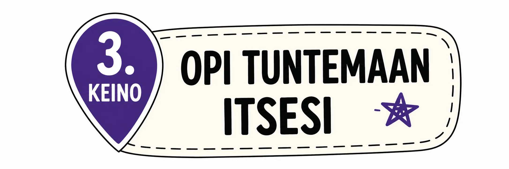
Kaikilla on vahvuuksia. Kun tunnet itsesi, teet parempia valintoja.
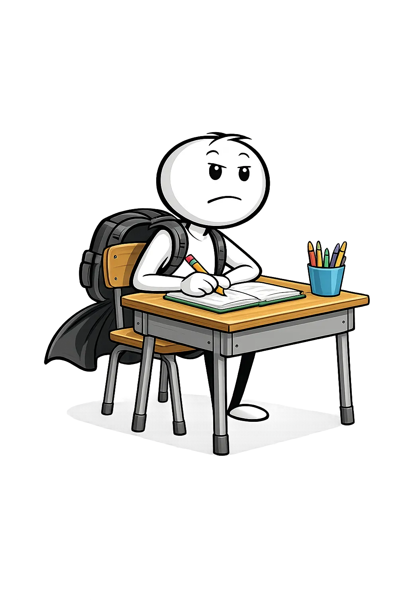
Vahvuushuutokauppa
Liikkuva ryhmätehtäväJokaiselle ryhmälle annetaan budjetti: 10 pistettä ja lista 15 vahvuudesta. Ryhmä päättää yhdessä, mitkä 3 vahvuutta se haluaa "ostaa" — ja miksi juuri ne.
- Lukekaa vahvuuslista läpi ja keskustelkaa: mitä kukin vahvuus tarkoittaa käytännössä?
- Sopikaa ryhmässä: mitkä 3 vahvuutta ostatte 10 pisteellä? (Pisteet voi jakaa esim. 4+4+2)
- Jokainen kertoo vuorollaan: onko jokin ostetuista vahvuuksista minun?
- Kiertäkää kuuntelemassa, mitä muut ryhmät valitsivat — ja miksi
- Purku: mikä vahvuus ostettiin useimmiten? Miksi se tuntuu tärkeältä?
⏱ Aika: 20–25 min · Ryhmäkoko: 3–4 oppilasta · Liikkuva
Luo oma vahvuuskartta: kirjoita paperille kaikki asiat, joissa olet mielestäsi hyvä — myös ne pieniltä tuntuvat. Luokittele vahvuudet: sosiaaliset, luovat, tekniset, fyysiset. Mitkä kategoria on sinulle vahvin?
Pyydä jotakuta, joka tuntee sinut hyvin, lisäämään listaan yhden vahvuuden, jota et itse huomannut
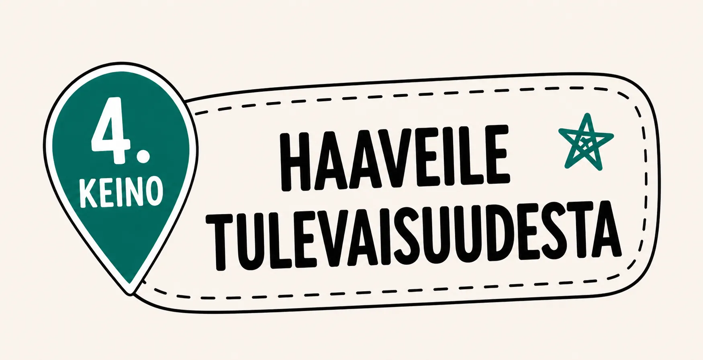
Tulevaisuutta ei voi tietää etukäteen — mutta sitä voi harjoitella kuvittelemaan. Haaveilu ei ole laiskottelua. Se on taito, jota tarvitaan kun maailma muuttuu ja tutut työkalut katoavat.
Tällä oppitunnilla teet Aikamatka tulevaisuuteen -tehtävän: matkaat Robon kanssa vuoteen 2045, teet valintoja ja kirjoitat omista unelmistasi. Samalla harjoittelet tärkeintä taitoa: mitä teen, kun en tiedä mitä tehdä?
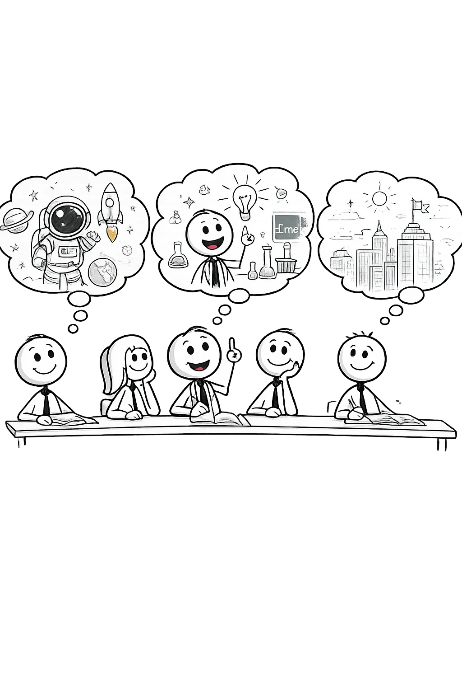
tulevaisuuteen
Koulupäivän jälkeen
Löydä mielekästä tekemistä vapaa-ajalle.
Koulu on vain osa päivää. Vapaa-ajalla opit asioita, joita koulussa ei opeteta — ja löydät ehkä jotain, josta tulee sinulle tärkeää.